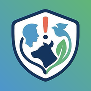
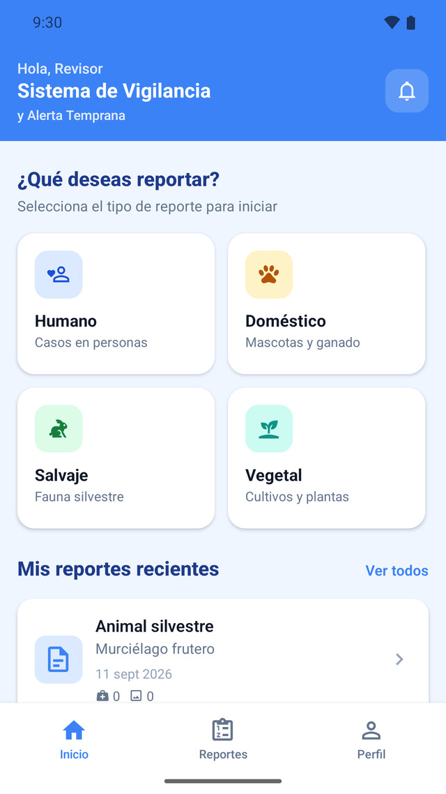
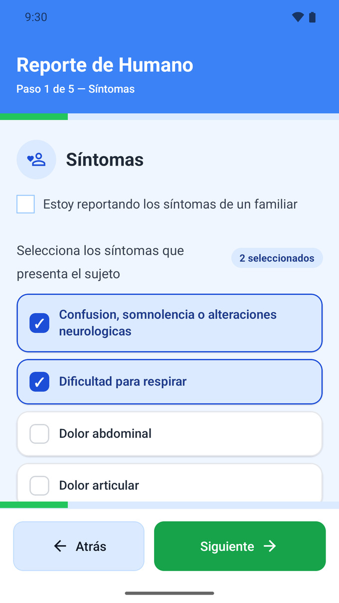
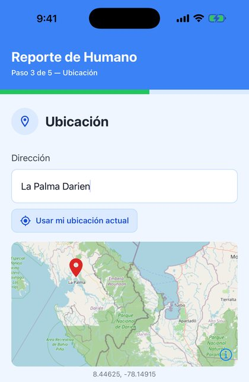

SIVATSIVAT es una app para que la comunidad de Darién reporte casos sospechosos de enfermedad en personas, animales y cultivos, con foto y ubicación exacta.
Android 8 o superior · ~120 MB · La versión de iPhone llega pronto al App Store
Cuatro tipos de reporte, cada uno con su propio asistente paso a paso.
Síntomas sospechosos en ti o en un familiar.
Mascotas y ganado enfermos.
Animales silvestres con signos de enfermedad o muertes inusuales.
Plagas y enfermedades en siembras.
Tres pantallas del flujo real: elegir qué reportar, marcar los síntomas y ubicar el caso en el mapa.



Un reporte toma menos de dos minutos.
Sin letra chica: esto es exactamente lo que pasa con lo que envías.
SIVAT es un proyecto de investigación de la Facultad de Ingeniería de Sistemas Computacionales de la Universidad Tecnológica de Panamá, con aprobación de su comité de ética. El objetivo es estudiar si la vigilancia comunitaria permite detectar brotes antes que los canales tradicionales en una región con acceso sanitario limitado como Darién.
SIVAT existe gracias a estas personas e instituciones.
Martín Gómez
Ingeniería de Software
Facultad de Ingeniería de Sistemas Computacionales, Universidad Tecnológica de Panamá
Secretaría Nacional de Ciencia, Tecnología e Innovación (SENACYT), que financió el desarrollo del proyecto.
Carson Centre
@carsoncentre